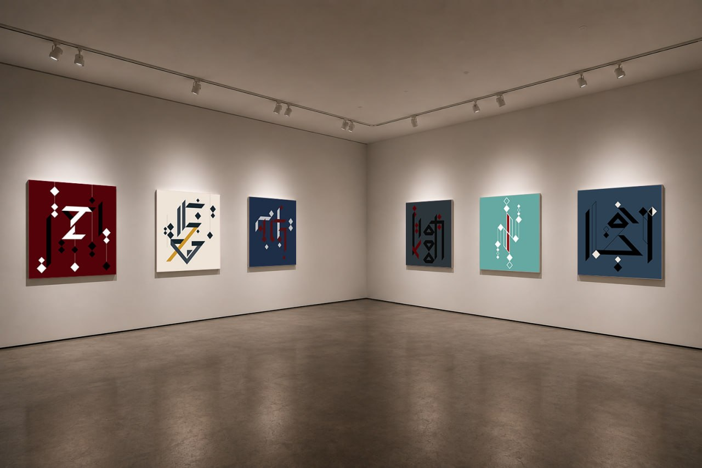

Country B
A Distributed Artwork
The current Sounding Canvas series is conceived as a distributed installation composed of multiple paintings that can interact with viewers and with each other. Each canvas functions as an independent interactive artwork, capable of establishing a direct sensory dialogue with the person touching it.
At the same time, the canvases are designed to communicate remotely with other canvases in the series. Through this connection, an interaction taking place in one location can resonate within another artwork elsewhere.
For this reason, the works are organized in paired relationships. Each pair forms a conceptual and technological link between two paintings, allowing gestures performed in one place to influence the sonic behavior of another.

Beyond the room
The artwork has no single location.
This structure allows the installation to be presented across multiple exhibition spaces simultaneously, creating a distributed artwork in which distant viewers become indirectly connected through sound, gesture, and interaction.
In this way, Sounding Canvas expands the idea of a painting from a single object into a networked artistic system, where images, sounds, and human actions form an evolving web of relations.
Someone is touching the painting.
You are in Country B. You enter a room where six Sounding Canvases are distributed across two walls.
As you approach the right wall, you suddenly hear a sound coming from the middle painting, Echo of Lines.
You know that each canvas has a paired variation in Country A. If Echo of Lines is sounding, it means that someone in the other country must be touching its counterpart.
You move closer and listen carefully. When the sound ends, you decide to trick your distant counterpart. Instead of touching Echo of Lines, you reach for the painting beside it: Calligraph of Absence.